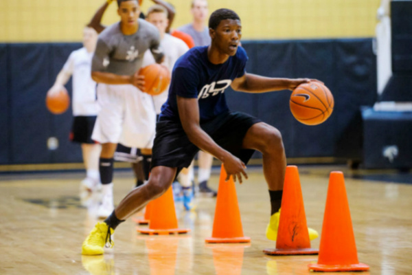

How to dribble correctly?
Dribbling is the method of advancing in basketball. When dribbling, you should keep your eyes on your defender and keep the dribble low as possible and also pound the ball hard. This method can prevent your opponent from stealing your ball. As a novice basketball player, you should start practicing by first pounding the ball hard with one hand, then try to do some crossovers, this can help you switch sides when your playing basketball.
